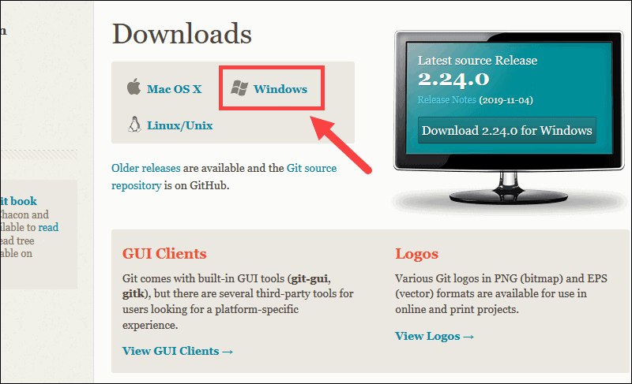

What is Github?
To be very crisp about what exactly is GitHub, it is a file or code-sharing service to collaborate with different people.
GitHub is a highly used software that is typically used for version control . It is helpful when more than just one person is working on a project. Say for example, a software developer team wants to build a website and everyone has to update their codes simultaneously while working on the project. In this case, Github helps them to build a centralized repository where everyone can upload, edit, and manage the code files.
What is Git?
So, what is Git in a nutshell? This is an important section to absorb, because if you understand what Git is and the fundamentals of how it works, then using Git effectively will probably be much easier for you. As you learn Git, try to clear your mind of the things you may know about other VCSs, such as CVS, Subversion or Perforce — doing so will help you avoid subtle confusion when using the tool. Even though Git’s user interface is fairly similar to these other VCSs, Git stores and thinks about information in a very different way, and understanding these differences will help you avoid becoming confused while using it.
Git vs. GitHub in Simple Terms
So, taken all together: Git vs. GitHub… what’s the difference? Simply put, Git is a version control system that lets you manage and keep track of your source code history. GitHub is a cloud-based hosting service that lets you manage Git repositories. If you have open-source projects that use Git, then GitHub is designed to help you better manage them.
After all, in the world of programming, naming conventions aren’t always intuitive. That’s why it’s worth recognizing the connections and the differences in the similarly named Git and GitHub. Both Git and GitHub give programmers valuable version-control functionality so that they can build ongoing coding projects without being afraid of messing everything up. GitHub just takes things a little bit further than Git, offering more functionality and resources, as well as a place online to store and collaborate on projects.
And that’s essentially it. Simple, right?
How to use Git & GitHub
Step 1: Create an account on GitHub
Click here to create an account on GitHub
Step 2: Install Git on Windows
Browse to the official Git website: https://git-scm.com/downloads
Click the download link for Windows and allow the download to complete.
Browse to the download location (or use the download shortcut in your browser). Double-click the file to extract and launch the installer.

Allow the app to make changes to your device by clicking Yes on the User Account Control dialog that opens.

Review the GNU General Public License, and when you’re ready to install, click Next and keep on pressing Next

Keep on pressing Next until Finish

Step 3: Launch Git in Windows
To launch Git Bash open the Windows Start menu, type git bash and press Enter (or click the application icon).